1과목: 응용역학
1. 아래 그림에서 P1 과 P2 의 크기는?
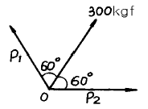
2. 그림과 같이 천정에 두끈을 매고 10kgf의 물체를 매달았을 때 두끈의 인장력 T1, T2의 합은?
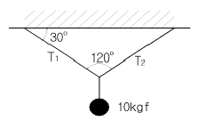
3. 다음 그림과 같이 직교좌표계 위에 있는 사다리꼴 도형 OABC 도심의 좌표는?
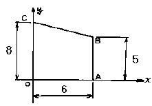
4. 지름 5㎝, 길이 200㎝의 강봉을 15mm만큼 늘어나게 하려면 얼마의 힘이 필요한가? (단, E = 2,100,000 kgf/㎝2)
5. 다음 그림과 같이 인장력을 받는 막대에서 최대 전단력을 갖는 경사면 θ 와 그 크기는? (단, σ 는 X 단면에서의 수직응력이다.)
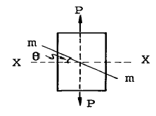
6. 다음 그림에서 연행 하중으로 인한 최대 반력 RA 는?
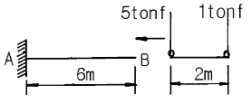
7. 그림과 같은 게르버보의 A점의 휨모멘트는?
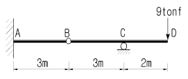
8. Euler 공식을 적용하는 일단 고정, 타단 활절인 장주에서 탄성계수 E = 210000 kgf/cm2, 단면폭 b =15 cm, 단면높이 h =30cm, 기둥길이 ℓ =18m 이다. 이때 최소 좌굴 하중 Pb 값은?
9. 그림과 같은 정정 아치(arch)의 지점 A의 수평반력은?
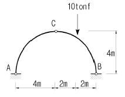
10. 에너지 불변의 법칙을 옳게 기술한 것은?
11. 다음 단면에서 직사각형 단면의 최대 전단응력은 원형단면의 최대 전단응력의 몇배인가? (단, 두단면의 단면적과 작용하는 전단력의 크기는 같다.)
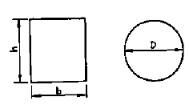
12. 다음 그림과 같은 트러스에서 DE부재의 부재력은?
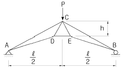
13. 등분포하중을 받는 직사각형단면의 단순보에서 최대처짐에 대한 설명으로 옳은 것은?
14. 다음 그림에 보이는 연속보의 중앙 지점에서의 휨모멘트를 구하면? (단, EI는 일정하다.)
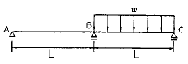
15. 경간 ℓ =8m, 단면 30 × 40cm 되는 단순보의 중앙에 10tonf 되는 집중하중이 작용할 때 최대 휨응력은?
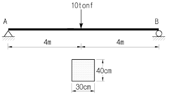
16. 다음 부정정보에서 지점B의 수직 반력은 얼마인가? (단, EI는 일정함)
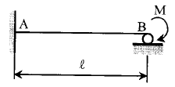
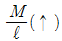
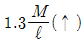
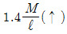
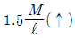
17. 다음 그림과 같은 도형의 x축에 대한 단면 2차모멘트는?
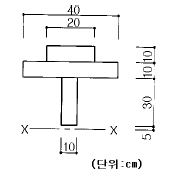
18. 캔틸레버보의 점 B 에 연직하중 P 가 작용 할 때 점 B 와 점 C 의 처짐각 θB와 θC의 비는?
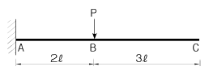
19. 그림과 같은 원통형 단면 기둥의 길이가 L=20m일 때 이 기둥의 세장비는?
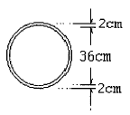
20. 단순지지 보의 B 지점에 우력 모멘트 Mo가 작용하고 있다. 이 우력 모멘트로 인한 A 지점의 처짐각 θa 를 구하면?
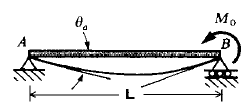
2과목: 측량학
21. 도로의 단곡선 계산에서 교점까지의 추가거리와 교각을 알고 있을 때 곡선시점의 위치를 구하기 위해서는 다음 요소 중 어느 것을 계산하여야 하는가?
22. 거리가 450m 인 두점 사이를 50m Tape를 사용하여 측정할 때 Tape 1회 측정의 정오차가 3㎜, 우연오차가 2㎜ 일 때 전 길이의 확률오차는?
23. 수준측량에서 경사거리 S, 연직각이 α 일 때 두 점간의 수평거리 D는?
24. 교점(I.P.)의 위치가 기점으로부터 143.25m 일 때 곡률반경 150m, 교각 58° 14′ 24″ 인 단곡선을 설치하고자 한다면 곡선시점의 위치는? (단, 중심말뚝 간격 20m)
25. 초점거리가 210mm 인 카메라로 표고 570m 의 지형을 1/25,000의 사진축척으로 촬영한 연직사진이 있다. 비행 고도는 얼마인가?
26. 25mm의 외심오차가 있는 앨리데이드로 축척 1/200인 측량을 할 때 외심오차로 인해 도상에는 얼마의 위치오차가 생기는가?
27. 다음 중 기지의 삼각점을 이용한 삼각측량의 순서는 어느 것인가?
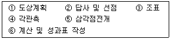
28. 다음 도로의 횡단면도에서 AB의 수평거리는?
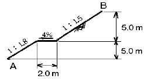
29. 직접법으로 등고선을 측정하기 위하여 B점에 레벨을 세우고 표고가 75.25m인 P점에 세운 표척을 시준하여 0.85m를 측정했다. 68m인 등고선 위의 점 A를 정하려면 시준하여야 할 표척의 높이는?
30. 수준측량에서 전시와 후시의 시준거리를 같게 함으로써 소거할 수 있는 오차는?
31. 다음은 수준측량에 관한 설명이다. 틀린 것은?
32. 삼각형의 내각 α, β, γ를 각각 다른 무게로 측정할 때 각각의 최확치를 구하는 방법 중 가장 옳은 것은?
33. 완화곡선설치에 관한 다음 설명 중 틀리는 것은?
34. 그림과 같이 0점에서 같은 정도로 각을 관측하여 다음과 같은 결과를 얻었을 때 보정값으로 옳은 것은? (단, x3 - (x1 + x2) = +45")
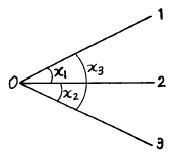
35. 수위관측소의 설치장소 선정 중 틀린 것은?
36. 다음 중 지구자원탐사위성으로부터 얻어진 영상의 활용분야로 가장 거리가 먼 것은?
37. 촬영고도 3,000m, 사진 I의 주점기선장 59mm, 사진 II의 주점기선장 61mm 일 때 시차차 2.5mm 인 두 점간의 고저차는 얼마인가?
38. 어느 고속도로를 시속 100km/h로 주행하기 위하여 필요로 하는 캔트(cant)는 얼마인가? (단, 곡선반경 : 400m, 궤간 : 15m)
39. 트래버스측량에서는 측각의 정도와 측거의 정도가 균형을 이루어야 한다. 지금 측거 100m 에 대한 오차가 ± 2㎜일 때 각관측오차는 얼마인가?
40. 다음 지형측량 방법 중 기준점측량에 해당되지 않는 것은?
3과목: 수리학
41. 다음 중 단위유량도 작성시 필요없는 사항은?
42. 모세관 현상에서 모세관고(h)와 관의 지름(D)의 관계는?
43. 그림과 같이 반지름 R의 원통형 관에 층류로 흐를 때 중 심부에서의 최대유속을 Vc로 하는 경우 평균유속 Vm은?
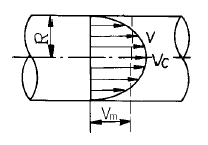
44. 사류(射流)의 수심이 0.8m이고 단위폭당 유량이 10m3/sec인 직사각형수로에서 도수가 발생할 때 에너지 손실은?
45. 지하수의 흐름에 대한 Darcy의 법칙은? (단, v는 지하수의 유속, k는 투수계수, Δh는 길이 Δℓ에 대한 손실수두임)
46. 지름 100㎝의 원형단면 관수로에 물이 만수되어 흐를 때의 동수반경(動水半徑)은?
47. 어느 하천의 수심이 5m일 때 평균유속을 2점법에 의하여 구하려면 유속계의 위치를 수면에서 각각 어느 위치에 설치해야 하는가?
48. 그림과 같은 두개의 수조를 한변의 길이가 10㎝인 정사각형 단면의 Orifice로 연결하여 물을 유출시킬 때 두 수조의 수면이 같아지려면 얼마의 시간이 걸리는가? (단, C = 0.65이다.)
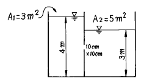
49. 다음 중 깊은 우물(심정호)를 옳게 설명한 것은?
50. 다음 중 합리식에 관한 설명으로 틀린 것은?
51. 그림과 같은 수중 오리피스에서 유량 Q를 구하는데 사용되는 수심은?
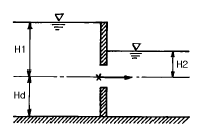
52. 유속이 5m/sec이고, 압력 P = 5t/m2 일 때 총수두는?
53. 유역내의 DAD해석이란?
54. 일단 물이 토양면을 통해 스며든 후 중력의 영향으로 계속 지하로 이동하여 지하수면까지 도달하게 되는 현상을 무엇이라 하는가?
55. 물의 점성계수(粘性係數)에 대한 설명 중 옳은 것은?
56. 그림과 같은 콘크리이트 케이슨이 바다물에 떠 있을 때 흘수는? (단, 콘크리이트 비중은 2.4이며, 바다물의 비중은 1.025이다.)
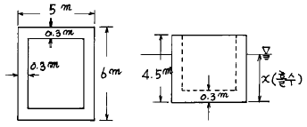
57. 정수압의 성질이 아닌 것은?
58. 전단응력 및 인장력이 발생하지 않으며 전혀 압축되지도 않고 손실수두(hL)가 0인 유체를 무엇이라 하는가?
59. 안지름 0.5m, 두께 20㎜의 수압관이 15㎏/㎝2의 압력을 받고 있다. 관벽에 작용되는 인장응력은?
60. 이중누가해석(double mass analysis)은 장기간 동안의 강수량자료에 대한 어떤 성질을 검사하기 위하여 가장 필요한가?
4과목: 철근콘크리트 및 강구조
61. fy = 3,500㎏f/㎝2, d = 50㎝ 인 강도설계의 단철근 직사각형 균형보에서 압축연단에서 중립축까지의 거리는?
62. 길이가 3 m인 캔틸레버보의 자중을 포함한 설계하중이 10.0 tonf/m 일 때 위험단면에서 전단 철근이 부담해야할 전단력을 강도 설계법으로 구하면? (단, fck = 240 kgf/cm2, fy = 3,000 kgf/cm2, b = 30 cm, d = 50 cm)
63. 그림과 같은 연결에서 리벳의 강도는? (단, 허용전단응력은 1300 ㎏f/㎝2, 허용지압응력은 3000 ㎏f/㎝2)
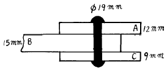
64. 그림과 같은 T형보에 정모멘트가 작용할 때 다음 중 옳은 것은? (단, b = 100 cm, tf = 8 cm, d = 60 cm, bw = 40cm, fck = 210 kgf/cm2, fy = 3000 kgf/cm2, As = 50 cm2)
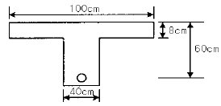
65. 강도설계법에서 전단과 휨 만을 받는 부재의 콘크리트가 부담하는 공칭 전단강도는?
66. 축방향 압축부재로서 띠철근으로 보강된 철근 콘크리트 부재의 강도감소계수 ø 의 값은 얼마인가?(오류 신고가 접수된 문제입니다. 반드시 정답과 해설을 확인하시기 바랍니다.)
67. 단철근 직사각형보를 강도설계법으로 설계할 때 철근비를 최소철근비 이상으로 규정하는 주된 이유는?
68. 3개의 철근을 묶어 다발로 사용할 경우에 정착길이의 증가량과 B급 이음을 했을 경우의 겹침이음길이가 바르게 묶여진 것은? (단, ℓd는 정착길이)
69. 유효깊이 d가 90 cm을 초과하는 깊은 휨부재 복부의 양측면에 부재 축방향으로 배근하는 철근의 명칭은?
70. 다음 중 PS 강재에 요구되는 성질이 아닌 것은?
71. 그림과 같은 단면에서 최대철근량과 설계 휨강도 φMn은 약 얼마인가? (단, fck=210kgf/cm2, fy=3500kgf/cm2, ø=0.85)
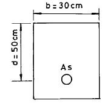
72. 단면 30cm × 40cm 이고, 1.5cm2의 PS강선 4개를 단면 도심축에 배치한 프리텐션 PSC 부재가 있다. 초기 프리스트레스 10000kgf/cm2일 때 콘크리트의 탄성수축에 대한 프리스트레스 손실량은 얼마인가? (단, n=6)
73. 인장부재의 순단면적을 산정할 때의 볼트구멍의 지름은 공칭지름에 얼마를 더한 값으로 계산하는가?
74. 보를 설계할 때 강도설계법에 대한 기본 가정중 옳지 않은 것은?
75. 띠철근과 나선철근을 두는 주된 이유는?
76. 보통 골재를 사용한 콘크리트의 압축강도가 300kgf/cm2을 초과할 때 탄성계수를 구하는 식으로 옳은 것은?
77. 연속보의 한지간에 대한 휨모멘트를 아래 그림에 나타내었다. 지점부와 지간중앙부의 철근 배근 위치가 적당한 것은?
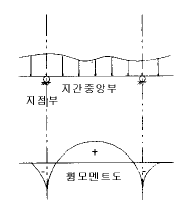
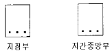
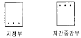
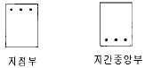
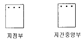
78. PS 강재에서 요구되는 일반 성질 중에서 틀리는 것은?
79. 뒷부벽식 옹벽의 뒷부벽은 어떤보로 보고 설계하는가?
80. 인장철근이 필요한 휨 부재의 모든 단면은 규정된 최소철근량 이상을 사용해야 하는데, 이 때 해석상 필요한 철근량보다 얼마 이상 철근을 더 배근하면 이들 규정을 적용하지 않아도 되는가?
5과목: 토질 및 기초
81. 아래 그림과 같이 사질토 지반에 타설된 무리마찰말뚝이 있다. 말뚝은 원형이고 직경은 0.4m, 설치간격은 1m이었다. 이 무리말뚝의 효율은 얼마인가?
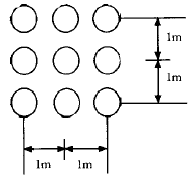
82. 다음의 사운딩(Sounding)방법 중에서 동적인 사운딩(Sounding)은?
83. 어떤 시료를 입도분석한 결과 #200체 통과량이 56%이었고 에터버그 시험결과 액성한계가 40%이었으며 카사그랜드 소성도의 A선위의 구역에 plot되었다면 이 시료는 통일분류법으로 다음 중에 어디에 해당되는가?
84. 어떤 흙에 대한 일축압축 강도가 1.2㎏/㎝2이었고, 파괴면과 최대 주응력면이 이루는 각을 측정하였더니 45° 였다. 이 흙의 전단강도는?
85. 연약 점토의 전단강도를 측정하는 현장 시험 방법은?
86. 그림과 같이 물이 위로 흐르는 경우 Y - Y 단면에서의 유효응력은?
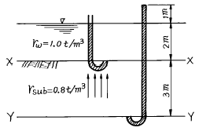
87. 단위 체적중량 1.8t/m3, 점착력 2.0t/m2, 내부마찰각 0°인 점토지반에 폭 2m, 근입깊이 3m의 연속기초를 설치하였다. 이 기초의 극한 지지력을 Terzaghi 식으로 구한 값은? (단, 지지력 계수 Nc = 5.7, Nr = 0,Nq = 1.0이다.)
88. 지표가 수평인 연직 옹벽에 있어서 주동토압 계수와 수동토압 계수의 비는? (단, 흙의 내부 마찰각은 30° 이다.)
89. 10m × 15m의 장방형 기초위에 q = 6t/m2의 등분포 하중이 작용할 때 지표면 아래 10m에서의 수직응력을 2 : 1 법으로 구한 값은?
90. 다짐에너지에 관한 설명 중 옳지 않은 것은?
91. 다음의 흙댐에서 유선망을 작도하는데 있어 경계조건이 틀린 것은?
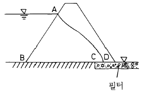
92. Boiling 현상은 주로 어떤 지반에 많이 생기는가?
93. 다음 중 사면 안정 해석법과 관계가 없는 것은?
94. 어떤 흙의 습윤단위중량(γt)이 1.852g/cm3이고 함수비(W)가 42%일때 이 흙의 건조단위중량(γd)은 얼마인가?
95. 다음 중 직접기초에 속하지 않는 것은?
96. 내부 마찰각이 26° 인 어떤 흙을 삼축압축시험 했을 때 최소 주응력면과 파괴면이 이루는 각은?
97. 평판재하시험에서 침하량 1.25㎜에 해당하는 하중강도가 2.3㎏/㎝2일때 지지력 계수는?
98. 두께 6m의 점토층이 있다. 이 점토의 간극비는 eo = 2.0 이고 액성한계는 WL = 70%이다. 지금 압밀하중을 2㎏/㎝2 에서 4㎏/㎝2로 증가시키려고 한다. 예상되는 압밀침하량은? (단, 압축지수 Cc는 Skempton의 식 Cc = 0.009(WL – 10)을 이용할것)
99. 다음의 연약지반 처리공법에서 일시적인 공법은?
100. 변수위 투수시험에서 1.25m의 초기수두가 2시간동안 0.5m로 떨어졌다. 이때 stand pipe의 직경은 5mm 이고 시료의 길이는 200mm, 시료의 직경은 100mm 이다. 이 흙의 투수계수는?
6과목: 상하수도공학
101. 강우강도 I = 4,000/(t+30) mm/hr, 유역면적 5km2, 유입시간 420초, 유출계수 0.8, 하수관거 길이 1km, 관내유속 1.2m/sec인 경우의 최대우수유출량을 합리식에 의해 구하면?
102. 일반적인 정수처리 공정순서로 다음 중 옳은 것은?
103. 하수종말 처리장에 유입하는 하수 20mL를 채취하여 증류수에 희석하여 300mL로 하였다. 식종은 별도로 하지 아니하였으며 희석 후 시료의 용전산소량은 8.5mg/L 이었고 20℃에서 5일간 배양후 시료내의 용존산소량은 2.8mg/L 이었다. 이 하수의 BOD5는 얼마인가?
104. 펌프가 공동현상을 일으키지 않고 임펠러로 물을 흡입하는데 필요한 흡입기준면으로부터의 최소한도 수위를 무엇이라 하는가?
1⑤. 스톡스 법칙(Stoke's 법칙)을 이용하여 설계하는 시설은 다음 중 어느 것인가?
106. 다음 관거별 계획하수량에 대한 사항으로서 틀린 것은?
107. 다음 하수관거 시공중 장애물 횡단방법으로 적합한 것은?
108. 어느 도시의 총인구가 5만명이고, 급수인구는 4만명일 때 1년간 총급수량이 200만톤 이었다. 이 도시의 급수보급률과 1인 1일 평균급수량은? (순서대로 급수보급률, 1인 1일 평균급수량)
109. 상수의 정수시에 일반적인 살균방법으로 가장 많이 사용되는 것은?
110. 수도용 구조물의 규모 결정시 사용되는 급수량의 종류 중 연평균 1일 사용 수량에 대하여 비율로 표현할 때 가장 큰 값을 나타내는 것은?
111. 펌프에 연결된 관로에서 압력강하에 따른 부압발생을 방지하기 위한 방법이 아닌 것은?
112. 유량 30,000m3/day, BOD 2ppm인 하천에 배수량 2,000m3/day, BOD 400ppm인 오수를 방류하여 즉시 균등하게 혼합된다면 하천의 BOD는 얼마가 되겠는가?
113. 다음의 사항 중에서 틀린 것은?
114. 함수율 98%인 슬러지를 농축하여 함수율 95%로 낮추었다. 이때 슬러지의 부피감소율은?
115. BOD 2.5mg/L의 하천수를 취수하여 정수처리할 경우 우선 고려할 수 있는 처리방법은?
116. 하수배제방식 중 분류식과 합류식에 관한 설명으로 틀린 것은?
117. 받이와 하수관거를 연결해서 하수를 본관으로 집수하기 위하여 도로를 횡단하여 매설하는 것은?
118. 배수관에서 분기하여 각 수요자에게 음용수를 공급하는 것을 목적으로 하는 시설은?
119. 우수저류지에 대한 설명으로 가장 거리가 먼 것은?
120. 하수도의 기본계획시 조사 항목으로 먼 것은?